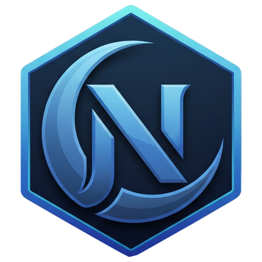
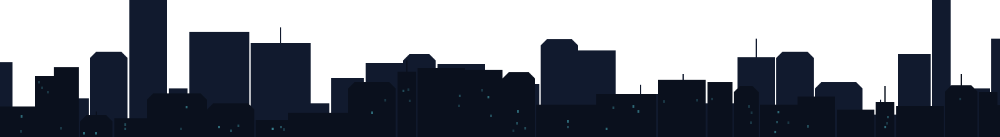

6 à 12 chiffres. Évitez les suites (123456), les répétitions et les dates. 8 chiffres ou plus recommandés.
Aucune biométrie n'est utilisée. Le code protège la clé qui chiffre vos données locales.
Notez-la sur papier ou dans un endroit sûr hors de cet ordinateur. Elle ne sera plus jamais affichée. Sans votre code ni cette clé, vos données NIGHTFALL seront définitivement illisibles.